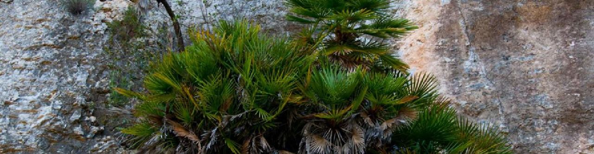

Ruta · Vallirana
Itinerari amb vistes sobre el poble de Vallirana . S’endinsa en els cingles , mostrant la roca , les plantes i ocells d’aquest ambient particular . Sentirem la frescor dels torrents secs i…